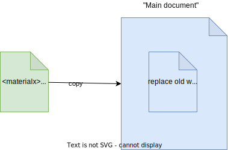

Documents
Documents are top level containers of all 'elements' supported by MaterialX.
It is useful to split up the contents of documents based on these semantic categories:
- Shaders and Materials: This includes all nodes, graphs, definitions, implementations and shader translation
- Geometry Bindings: This includes looks, material assignments, and application bindings. This section will not cover this topic and any associated document level properties such as geometry identifier tokens.
The corresponding API class is Document. Here you will find a listing of interfaces roughly broken down by the type of element.
Some important properties that are maintained at the document level include:
-
Version ('version'): This is the MaterialX version used to store the document contents. getVersionIntegers() in the Document API should be used. This differs from:
- The runtime version currently executing. This can be queried using the getVersionString() interface. It is important to note that the "build" version is not stored in a document, but releases do include a build version that can be queried from this interface. For example a document may have version "1.38", but the build version could be '1.38.2". See the section on "Compatibility and Upgrade" to see how this affects the logic there.
- The version associated with a definition or definition and the shading language version for code generators. There is no correlation between these versions and the MaterialX runtime or document version.
-
Namespace ('namespace') : This can be used to partition content and/or indicate ownership. Namespaces must be handled properly when combining documents at runtime.
-
Colorspace ('colorspace') : This can be used to define the working color space, and as with namespaces care must be handled properly when combining documents at runtime.
-
Source URI ('sourceuri') : References to where content originated from can be specified here, and is useful as a partitioning mechanism. Documents do not by default store a 'sourceuri'.
-
File Prefix ('fileprefix') : Is a token prepended to any file name (`filename` type) references. It is a handy way to set the root directory for all image file names, without having to modify each individual reference. Note that 'fileprefix' will not be used to prefix file names which have absolute paths and that `fileprefix` can also be defined on a node graph -- which will prepend it's token before the document's token.
The API interface for 'resolving' identifiers such as file names is StringResolver. Within the API the word resolved is used to indicate interface variants which return the value after applying a resolver. For example getResolvedValueString() would return a filename with any `fileprefix` tokens added.
- The term " resolve" means to take some data and find the form which can natively be consumed by some deployment / integration. This will mostly apply to identifiers and URI paths.
- The term "flatten" means to convert something that is built up from simpler parts, back to those simpler parts. This will mostly apply to node definitions and conversion into their corresponding nodes and node graphs, but also means to transfer document attributes such as `fileprefx`, `colorspace` and `namespace` to each element inside a document.
Even though any number of documents may be kept in files for interoperability, it is recommended to work on a single " working" document at runtime, though there is no formal designation for this. Document creation interfaces work under the premise that:
- content is cumulative (appended) to a given document
- some validity checks are performed at read time
- duplicate elements cannot be created and thus not added. Note that this can result in an incomplete reading of data.
- nodes with categories which are not defined are invalid. There is now way to preserve nodes which are an unknown category, making it possible that reading or write loses data. As a guiding rule node definitions should be loaded into a document before any instances of those definitions.
The following are the main interfaces for dealing with documents. The Python "Basics" Example provides examples of using these interfaces.
- Creating Documents:
An empty document can be created using global interface createDocument(). Any number of of documents may be created and manipulated independently of each other.
A document is allowed to become "invalid" (not follow the specification). The 'validate()' API can be used to check for adherence to the specification. The Python utility mxvalidate.py uses this interface to perform document validation.
- Reading Documents:
The core distribution of MaterialX allows reading and writing in XML format support. The API interfaces which start with readXML can be used for reading. Options for reading can be provided the the structure: XmlReadOptions)The diagram below shows a document which is read and appended.
Since read only performs duplicate element checking, it is recommended to always run a `validate()` check afterwards.
- Copying Documents:
The interface copyContentFrom() can be used to replace the contents for a any document element including the entire document itself.Below is shown an example document which copies the content of another document.
 -
Importing Documents:
The importLibrary() interface is specialized for reading in node definition libraries and include files, making use of `copyContentsFrom()` to copy elements into the destination document. An important item to point out is that the URI for the source document is set on every copied element.
If the source document has a `namespace` qualifier, this namespace is "flattened" so that the copied elements have namespace qualifiers prepended to their identifiers.
A namespace delimiter is represented as a ':'. Thus if a source document has a namespace `mynamespace` and and element `myelement`, then the "flattened" element's identifier would be:
mynamespace:myelementThe word "qualified" in an interface indicates that it supports returns identifiers taking into account namespaces . For example, getQualifiedName() versus 'getName()'.
The diagram below shows an example document with a 'namespace' and a 'fileprefix'. "Flattening" basically means that every imported element's name has the 'namespace' prepended, and each filename string attribute has the 'fileprefix' file path prepended.
-
Includes:
Currently the only "inclusion" mechanism is via XML include directives. My default these directives are added when importing a library, but can also be explicitly added in. Aside from the regular caveats for using include files, it is not recommended to keep include references to library files to allow independence of a document from the library files being used. -
Writing Documents:
Akin to reading interfaces there is a series of write interfaces starting with writeXml, and corresponding set of write options (XMLWriteOptions).
As there is no current concept of one document referencing another document at runtime, it can be hard to determine where content originates from once "merged" into the main document.
One way to keep track of where content comes from is the fact at import always "tags"
imported
elements with their original URI. (sourceURI as shown in the image diagram). This can
be useful for
a various workflows including
exclusion of these elements at write time. An example can be to exclude
library definitions from node instances as shown below:
At runtime, these tags can be used for instance to enforce additional user rules such as being non-editable, or non-deletable.
For node definitions, there is currently no formal construct for a "collection" (set) of documents to be used as a "library" / "module" / "package" etc and is thus up to the user to overlay semantics to partition content.
Take for example the folder structure for the "standard" libraries which come with the MaterialX distribution. Note that the folder names can be used to semantically separate a 'bxdf', and 'pbrlib', and 'stdlib' library, but there is no information within a document or set of documents which indicate it is or belongs to a "library".
|--bxdf
| |--lama
| +---translation
+---lights
| |---genglsl
| +---genmsl
+---pbrlib
| +---genglsl
| | +---lib
| +---genmdl
| +---genmsl
| +---genosl
| +---legacy
| +---lib
+---stdlib
| +---genglsl
| | +---lib
| +---genmdl
| +---genmsl
| | +---lib
| +---genosl
| +---include
| +---lib
+---targets
In this case the 'import' API, will return a list of all files read under a given
folder. These can be used to keep track of what documents have been read. As
all the imported elements are tagged with the 'sourcuri' for the file it
is read from, this can be used to filter out 'library' content from non-library
content.
By intent, the MaterialX format is designed for interoperability using a standard set (library) of definitions.
Some points of interest for interop follow:
-
Independence of interfaces from implementations is intentional. Any definitions which are based on standard library definitions can be supported by all core backend shader implementations thus providing for implementation standardization. Source code implementations for standard library definitions are written to conform with one another. e.g the GLS, OSL, MDL and MSL implementations are meant to be logically identical.
- Dependent resources are not embedded into the file format
itself but only referenced. For example, geometry and images
is not encoded into the MaterialX format, though it is an interesting avenue
which has been followed by other formats.
- One " downside" is that additional "side-car" files which define intrinsically part of an "asset" need to be kept track of somewhere else.
- An "upside" is no dependence on additional resource handling utilities is required as part of the core distribution.
Naturally transferring to a system which embeds dependent data requires additional logic , and conversely transforming from such a system requires "unpacking" logic. For example `glTF` embeds images and requiring specific packing and unpacking (e.g. is "occlusion, roughness, metalic" packing into single images). Some of these are not as bespoke, so could be potentially encoded as reusable node graphs.
More extensive documentation for this format's interop can be found in this project.
-
It is useful to keep image references using relative URI paths and use `fileprefix` specifiers and only "resolve" to absolute paths during deployment (e.g. when sending to a renderer or code generation).). Utilities to resolve are categorized as part of the "resolving" process. This would also include `UDIM` file name resolution.
It is also useful to keep `colorspace` and `unit`s unresolved. For both, resolution logic is dependent on the deployment target. e.g. the working colorspace for a render, or the unit applied to geometry within an application.
A flattenFilenames() utility is provided to perform performs both flattening and resolving using built in resolvers for `fileprefix` as well as accepting a custom resolver. The last option is useful to perform custom application / renderer specific token substitution.
-
Node Definitions: It is useful to keep definitions which encapsulate a logical entity for a user and to only "flatten" these into it's atomic definitions, or shader code at deployment time. For example a "plastic" material could be a definition which is converted to standard library nodes at some later time. However for interop purposes, instances of the plastic material are passed around.
A node definition "flattening" can be achieved using the flattenSubgraphs() API interface.An integration may deem that it is too "costly" to keep abstract definitions and instead keep only standard library nodes, or just source code. The first, still allows for implementation independence and maintains interoperability, but the latter does not. For example `Three.js` keeps static code snippets for definitions. This static source code can easily be out of sync and can lose important properties like versioning.
MaterialX has been designed to be file format backwards compatible. Thus
any older document can always be assumed to be compatible with the current
version of MateriaX.
There is a built in " upgrade" mechanism which is available as a document level utility (
`upgradeVersion()`)
to upgrade a documents contents current runtime version.
Note that issues can ensue by running different run-times with different versions as
you may end up with incompatible documents. A "single version" model is recommended.

An upgrade will automatically be performed as part of document reading.
Note that for and between patch releases the version number of saved documents
does not change and thus upgrade will not occur.
For example, a patch release of "1.38.6" will not perform any upgrade for a document
of version "1.38" as only the major (1) and minor (38) versions are compared.

Automatic upgrading can be overridden via the `upgradeVersion` option on XmlReadOptions (See description of reading in `Document Management`) A small caveat is that if something has been deprecated and removed from a release the document may not read in properly. For convenience, a Material release includes a Python utility script (mxformat.py) which can be used to perform automate document upgrades and formatting.
There is no mechanism to "downgrade" a document to an earlier version.
Examples of changes to be watchful for include existing node definition changes,
and addition of new definitions. It is recommended to not
replace older versions with a newer version if not required.
Note that if there are resource or geometric binding dependencies
it may be required to version them as well. An example of this is "standard_surface"
which changed the default values of it's `base` and `base_color` attributes by swapping
them
(0.8, and 1.0 in the older version and 1.0 and 0.8 in the newer). Thus if there was a
previous texture
bound to `base` which assumed
a modulation by a `base_color` of 1.0, then it's contents would need to be modified
taking into
account
that the current `base_color` is now 0.8.
Basically, the upgrade mechanism does not know and thus cannot take into consideration external content and non-standard library definitions changes. This is the responsibility of the integration.
Anything that is stored which is not part of a MaterialX document is also not taken into consideration when upgrading. This includes derived / generated content such as shader code. For instance if `OSL` code is generated for a given version, if that code implementation changes in a future version the originally generated code may not be compatible with the newly generated code. Thus as with interoperability, it is recommended to keep data in it's "original" MaterialX form as much as possible.